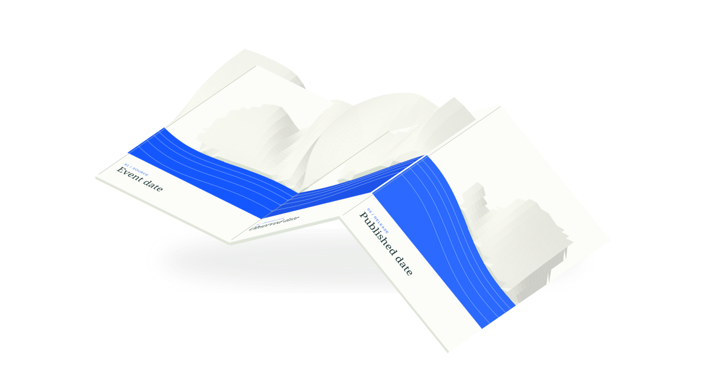

THE LIVING ATLAS
Unfold a
clearer picture.
Public evidence for
the Palisades rebuild.

02
Observed date. When a source was first collected.
The three sheets describe different dates. An event date says when a source reports something happened. An observed date says when that record was first collected. A published date identifies when a snapshot was released. The artwork contains no actual records or recovery measurements.